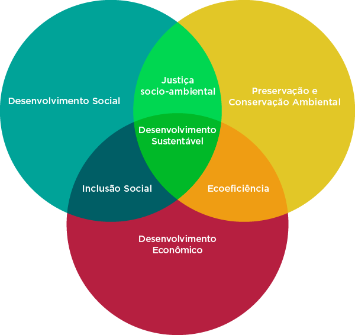

2. Recursos, Técnicas e Estratégias
Maria de Lourdes Parreiras Horta (1999), ao tratar da temática da Educação Patrimonial destaca que a proposta de uma metodologia para o desenvolvimento de ações educacionais voltadas para o uso e a apropriação dos bens culturais que compõem o nosso “patrimônio cultural” foi introduzida no Brasil, em termos conceituais e práticos, por ocasião do I Seminário sobre o “Uso Educacional de Museus e Monumentos”, realizado em julho de 1983, no Museu Imperial, em Petrópolis, Rio de Janeiro. Esse foi o pontapé inicial para a realização de inúmeras experiências cujo propósito consistiu na valorização da memória coletiva e na elevação da "auto-estima de comunidades em processo de desestruturação, no desenvolvimento local e no encontro de soluções inovadoras de preservação do patrimônio cultural, em áreas sob o impacto de mudanças e transformações radicais em seu meio ambiente" (HORTA, 1999, p. 3).
Qual a importância do patrimônio cultural para a formação do cidadão crítico e participante?
Como princípio básico da Educação Patrimonial Horta reforça que a experiência direta dos bens e fenômenos culturais, para se chegar à sua compreensão e valorização, num processo contínuo de descoberta é de fundamental importância tanto para o ensino formal quanto para o não-formal. Quando os objetos e expressões do patrimônio cultural são a matéria-prima para a atividade pedagógica, por meio da observação e questionamento, o resultado pode ser convertido em conceitos e conhecimentos. Quando se toma os fenômenos culturais, como pistas ou indícios, possibilita-se que as comunidades e o indivíduo construam o conhecimento crítico e se apropriem com responsabilidade do seu “patrimônio” e, desse modo, contribuam para o processo de preservação sustentável desses bens, assim como para o fortalecimento dos sentimentos de identidade e cidadania.
A partir da experiência e do contato direto com as evidências e manifestações da cultura, em todos os seus múltiplos aspectos, sentidos e significados, o trabalho da Educação Patrimonial busca levar as crianças e adultos a um processo ativo de conhecimento, apropriação e valorização de sua herança cultural, capacitando-os para um melhor usufruto destes bens, e propiciando a geração e a produção de novos conhecimentos, num processo contínuo de criação cultural. A observação direta e a análise das “evidências” (aquilo que está à vista de nossos olhos) culturais permitem à criança ou ao adulto vivenciar a experiência e o método dos cientistas, dos historiadores, dos arqueólogos, que partem dos fenômenos encontrados e da análise de seus elementos materiais, formais e funcionais para chegar a conclusões que sustentam suas teorias. O aprendizado desse método investigatório é uma das primeiras capacitações que se pode estimular nos alunos, no processo educacional., desenvolvendo suas habilidades de observação, de análise crítica, de comparação e dedução, de formulação de hipóteses e de solução de problemas colocados pelos fatos e fenômenos observados (HORTA, 1999, p. 4).
Página 133É somente quando se conhece os elementos que compõem a riqueza e diversidade cultural de cada comunidade, qual sua origem e de que forma contribui para a formação da identidade nacional, é que se torna possível o respeito a essa diversidade e à multiplicidade de expressões e formas com que a cultura se manifesta, nas diferentes regiões, a começar pela linguagem, hábitos e costumes. A partir desse momento é possível estimular "o espírito de tolerância, de valorização e de respeito das diferenças, e da noção de que não existem povos “sem cultura”, ou culturas melhores do que outras" (HORTA, 1999, p. 4) . Para que tais premissas se tornem realidade, é necessária a utilização de recursos, técnicas e estratégias que tenham como objetivo a implantação da metodologia da Educação Patrimonial. Segundo Horta (1999), o diálogo permanente que está implícito neste processo educacional estimula e facilita a comunicação e a interação entre as comunidades e os agentes responsáveis pela preservação e o estudo dos bens culturais, possibilitando a troca de conhecimentos e a formação de parcerias para a proteção e valorização desses bens.
A metodologia específica da Educação Patrimonial pode ser aplicada a qualquer evidência material ou manifestação da cultura, seja um objeto ou conjunto de bens, um monumento ou um sítio histórico ou arqueológico, uma paisagem natural, um parque ou uma área de proteção ambiental, um centro histórico urbano ou uma comunidade da área rural, uma manifestação popular de caráter folclórico ou ritual, um processo de produção industrial ou artesanal, tecnologias e saberes populares, e qualquer outra expressão resultante da relação entre os indivíduos e seu meio ambiente.Outro aspecto de fundamental importância no trabalho da Educação Patrimonial é o seu caráter transdisciplinar, podendo ser aplicado como método em todas as disciplinas (HORTA, 2006, p. 6).
A aplicação da metodologia da Educação Patrimonial deve considerar que todo território é produto de toda uma história natural e humana, por isso, se não houver o respeito pelos elementos patrimoniais locais, um desenvolvimento local equilibrado e sustentável não ocorrerá em sua plenitude. É necessário valorizar a paisagem e os fatores favoráveis ou desfavoráveis à vida dos homens e às suas atividades sociais e econômicas. Deve-se considerar a linguagem, as crenças, os ritmos da vida cotidiana, a relação tradicional com os territórios vizinhos. O patrimônio deve ser visto como um recurso que contribuirá para o desenvolvimento.
Os diferentes elementos de um patrimônio, tanto natural como cultural, são interdependentes, e toda ação sobre um deles provoca efeitos e repercussões sobre outros. É um recurso ao mesmo tempo não renovável (de modo "idêntico") e eminentemente transformável e reprodutível, que se regenera e faz aparecer novas formas, ao menos quando está integrado a uma dinâmica de desenvolvimento, isto é, de domínio da mudança. Se a mudança não é dominada, controlada, o patrimônio se empobrecerá e partes inteiras dele desaparecerão, sem benefício real para ninguém (VARINE, 2012, p. 20).
Quando se trata de desenvolvimento sustentável pensa-se em um crescimento aliado a um equilíbrio e proteção ambiental, ao mesmo tempo em que gera renda para a atual geração sem deixar comprometido esses ambientes para as futuras gerações. Uma série de fatores deve ser considerada quando políticas públicas são propostas. Observem o esquema:
Página 134
Os diversos fatores já citados no início do texto apresentam pontos de interseção cujo resultado vai em direção ao desenvolvimento sustentável, à inclusão social, à justiça socioambiental, dentre outros. Entretanto, será correto afirmar que toda atividade é sustentável?
Não. Nenhuma atividade é sustentável para sempre, tendo em vista que toda ação causa degradação, porém deve-se tentar usufruir do meio, seja urbano ou ambiental, tentando causar o mínimo impacto possível.
E o turismo? Pode se tornar um agente de desenvolvimento sustentável? Existe uma relação entre turismo e patrimônio cultural? Como usufruir e preservar ao mesmo tempo? Por que mudar as relações entre sociedade e a natureza?
A sociedade depende dos recursos naturais para sobreviver, e, caso não haja uma preocupação imediata em preservar o meio em que se vive, o risco de entrar em uma grande crise ambiental será grande. Por isso, torna-se urgente sensibilizar as comunidades e os indivíduos quanto à relação que devem manter tanto com o meio ambiente rural, quanto com o meio ambiente urbano. É necessário adotar novas estratégias para sensibilizar a população para a importância do seu patrimônio, de suas raízes, propondo ações sustentáveis por meio de uma ação comunitária.
Neste sentido, Varine (2012, p. 20) esboça duas definições:
- O desenvolvimento local é um processo voluntário de domínio da mudança cultural, social e econômica, enraizado no patrimônio vivido, nutrindo-se deste patrimônio e produzindo patrimônio.
- O patrimônio (natural e cultural, vivo ou sacralizado) é um recurso local que só encontra sua razão de ser em sua integração nas dinâmicas de desenvolvimento. Ele é herdado, transformado, produzido e transmitido de geração em geração. Ele pertence ao futuro.
Desse modo, assim como Varine, acredito que o desenvolvimento só será sustentável se ocorrer em harmonia com o patrimônio e se contribuir para a vida e para o crescimento dos seus detentores. Para isso, é necessária a participação efetiva, ativa e consciente das comunidades. É possível envolver as comunidades com as questões relacionadas ao seu patrimônio?
Varine (2012) e Horta (2006), definem a educação patrimonial como uma ação de caráter global, dirigida a uma população e a seu território, desenvolvida no ensino formal e no ensino não-formal, cujo objetivo é o desenvolvimento local, e não uma mera aquisição de conhecimentos sobre o patrimônio, ou uma animação cultural. Procura-se integrar o maior número de membros das comunidades a "conhecer, a dominar e a utilizar o patrimônio comum" como forma de promover o desenvolvimento do território no qual estão inseridos. Não se trata de uma educação "bancária", como classifica Paulo Freire, "mas libertadora, uma vez que participa da emergência da confiança em si, da capacidade de iniciativa, do reforço da identidade social e cultural, da coesão social pelo compartilhamento do patrimônio comum".
O método utilizado é o da troca, "compartilhamento de conhecimentos entre tradições orais, os saberes não formalizados, as práticas herdadas de um lado e os conhecimentos e referenciais eruditos, os aportes teóricos de pessoas de fora e mais formadas por outro lado". Por não ser propriedade dos agentes públicos, pode ser desenvolvida por diversos atores sociais e deve ser programada para longo prazo, considerando-se os contextos locais. Segue abaixo, alguns exemplos de ações de educação patrimonial já desenvolvidas em outros municípios brasileiros:
Página 135- Projetos especiais destinados, sobretudo, aos escolares, no Museu - para as cidades que possuem museu; Arquivos municipais: a Escola no Museu, a Noite no Museu, Documentos que contam Histórias, etc.;
- A criação de um mapa do contexto ambiental da cidade (em papel e CD-ROM), contendo uma quantidade de documentos para todo o tipo de atividade;
- Ateliês descentralizados e abertos a todos: jovens e adultos (fotografia, arqueologia, diário local participativo);
- Formação sistemática dos professores, por meio de seminários em cada municipalidade;
- Publicação de guias e de manuais práticos de ensino do patrimônio (conhecimento da casa, da água, das plantas medicinais, do meio ambiente, etc.);
- Organização de mostras sobre a produção local destacando suas técnicas ancestrais;
- Criação de pequenos museus locais, comunitários ou escolares com o apoio da população e ao mesmo tempo por um suporte municipal;
- Campanhas de defesa do patrimônio ou de alguns de seus elementos ameaçados, o que leva as pessoas, antes indiferentes, a se mobilizarem e se engajarem;
- Pesquisas participativas, por estudantes e por adultos, sobre pontos particulares (por exemplo, os caminhos, uma atividade artesanal tradicional, um mapa das construções tradicionais, o registro da memória sobre um acontecimento passado;
- Exposições, permanentes ou itinerantes, simplificadas ou mais bem instaladas, apresentando sucessivamente os aspectos específicos do patrimônio e contribuindo progressivamente para criar um "corpus do patrimônio";
- Criação de centros de interpretação, de um território ou de um tema ligado a este território;
- Publicação de documentos de cartões postais, até uma obra em vários volumes reproduzindo o inventário do patrimônio local;
- Criação participativa dos "mapas de comunidades" que permitem uma valorização da paisagem urbana e rural e uma tomada de consciência da variedade e da diversidade dos patrimônios pelas comunidades;
- Colóquios populares, caminhadas de descoberta;
Todos esses exemplos servirão como base no momento da elaboração do projeto de intervenção. Entretanto, existem muitos outros meios e técnicas que podem ser utilizados, porém, o importante é saber o que e como comunicar. Varine (2012) destaca dois princípios essenciais:
1) a relação entre a mensagem e a cultura viva das pessoas só é concreta e imediatamente compreensível para elas;
2) a necessidade de uma mediação humana entre o patrimônio e as pessoas, para decodificar a mensagem, escutar as reações, referenciar e valorizar as contribuições de cada um em termos de informações ou de sugestões, prever uma sequência à ação.
Para Varine, os métodos utilizados, na maioria das vezes, consistem na observação acompanhada, na mediação e na exposição. Por isso, ele ressalta a importância do mediador do patrimônio e que sua formação deveria também implicar um verdadeiro reconhecimento profissional. O mediador do patrimônio é o elo entre o patrimônio e o mundo ao seu redor, em sua dinâmica de mudança, de desenvolvimento e de interação. "É também um poliglota cultural, que pode se adaptar, de um momento para outro, a públicos muito diferentes, falando-lhes em linguagem compreensível, qualquer que seja o seu nível de educação ou sua origem social".
Sobre os monumentos sítios, Varine afirma que eles são indissociáveis: os primeiros já fazem parte da paisagem, os segundos apresentam características dos monumentos, naquilo em que foram no mais das vezes modelados pela atividade humana. Constituem-se ainda, como conjuntos definidos territorialmente a serem tratados como tais. "Disso decorre a importância de todas as ações que permitem à população se apropriar de sua globalidade, de modo a ter consciência de viver no interior de uma quadro patrimonial" (p.150). Segue uma lista de ações possíveis: Página 136- Efeitos de imagem: fazer conhecer a região, seus recursos, sua diversidade, sua criatividade;
- Efeitos de mobilização: intervenção de muitos habitantes em diversas atuações (recepção, organização, figuração, competências diversas);
- Efeitos culturais: formação e profissionalização, valorização das tradições, contribuições exteriores, conservação dos monumentos, valorização dos sítios;
- Efeitos sociais: emprego, filantropia, cooperação entre pessoas e grupos, vida associativa;
- Efeitos econômicos: contribuições financeiras, fluxo turístico, criação de atividades e empresas, salvamentos dos ofícios, escoamento das produções locais.
Sobre as manifestações de caráter religioso, diz que são um poderoso fator de desenvolvimento por atraírem turistas e peregrinos. Quer se trate de peregrinações locais, de locais de culto, locais de retiro e meditação, elas são a fonte de uma imagem positiva sobre a localidade. Neste sentido, Mônica Martins da Silva (2003) apresenta a coleção de paradidáticos Histórias de Goiás, a qual pode ser utilizada para nortear algumas ações voltadas para o patrimônio cultural imaterial. Segundo a autora, esta coleção surgiu no ano de 2002 a partir de diferentes pesquisas realizadas na Universidade Federal de Goiás por alunos do curso de mestrado em História nos mais diversos temas envolvendo os campos da história política, social e cultural. O resultado foi a organização de seis volumes temáticos que buscaram adaptar a linguagem formal e científica da academia para alunos de ensino fundamental e médio a fim de proporcionar outras fontes de leitura sobre a história de Goiás uma vez que, apesar do crescimento expressivo sobre as pesquisas em história regional, as fontes são ainda os clássicos textos escritos nos anos de 1970. Houve a preocupação em explicar não somente a inserção da história de Goiás no contexto nacional mas, explorar as múltiplas temporalidades dessas histórias bem como as especificidades do Estado em diferentes aspectos importantes de sua trajetória. Segundo Silva:
Procura-se demonstrar que a cultura também tem uma história e para isso indaga-se: Será que é possível saber da origem deste conjunto de hábitos que as pessoas possuem, como o de rezar para um santo, fazer uma promessa, ir a uma romaria, participar de um pouso de folia, de uma dança ou de uma novena? Infere-se: Se perguntarmos a elas, vão nos responder que aprenderam com os pais, com os avós ou com algum outro antepassado, mas nem sempre conseguirão nos explicar sua origem, daí é possível concluir que muitos desses hábitos são tão antigos e tão comuns que nem é possível datá-los e esse conjunto de hábitos que aprendemos através das gerações, chamamos de tradição. Porém, procura-se demonstrar que essas tradições não têm um forma única. Cada cidade, sociedade ou família possui as suas próprias tradições, e, como são repassadas por pessoas diferentes para épocas também diferentes são modificadas, adaptadas e recriadas. Uma vez que a cultura muda, assim também muda a sociedade em que se vive, e, se continuamos a repetir gestos e costumes do passado, eles vêm sempre com uma cara nova, com novas palavras, novas cores e novos sentidos (SILVA, 2003, p. 01).
Página 137Outro aspecto destacado por Varine são os parques naturais regionais onde poderão ser desenvolvidas atividades esportivas, culturais, econômicas, que permitam um desenvolvimento apoiado sobre o patrimônio como recurso primordial. Até mesmo a agricultura se torna um patrimônio, na medida em que transforma e mantém a paisagem e os espaços naturais, além dos modos de vida e o conjunto das atividades familiares e comunitárias. Em relação ao patrimônio imaterial, Varine destacou a valorização dos produtos e dos saberes locais. Contudo, para que as atividades sejam efetivadas, conhecer a metodologia será de fundamental importância.
Segundo Horta, a metodologia proposta para as atividades de Educação Patrimonial se estrutura sobre cinco etapas, caracterizadas por diferentes recursos pedagógicos, visando objetivos definidos para cada uma. Essas etapas seguem uma determinada ordem mas podem, naturalmente, acontecer simultaneamente, dependendo das respostas e iniciativas das crianças. As etapas propostas, os recursos, atividades e objetivos visados podem ser resumidos no quadro abaixo, e podem ser enriquecidas e inovadas pelo professor:
| Etapas | Recursos / Atividades | Objetivos |
|---|---|---|
| 1) Observação | exercícios de percepção/sensorial, por meio de perguntas, manipulação de objetos, medição, anotações, dedução, comparação, jogos de detetive, etc. | identificação do objeto: função/significado, desenvolvimento da percepção visual e simbólica |
| 2) Registro | desenhos, descrição verbal ou escrita, gráficos, fotografias, maquetes, mapas e plantas baixas, modelagem, etc. | fixação do conhecimento percebido, aprofundamento da análise crítica; desenvolvimento da memória, pensamento lógico, intuitivo e operacional |
| 3) Exploração | análise do problema, levantamento de hipóteses, discussão questionamento, avaliação pesquisa em outras fontes como bibliotecas, arquivos, cartórios, documentos, familiares, jornais, revistas, entrevistas, etc. | desenvolvimento das capacidades de análise e julgamento crítico, interpretação das evidências e significados |
| 3) Apropriação | recriação, releitura, dramatização, interpretação em diferentes meio de expressão, como a pintura, escultura, drama, dança, música, poesia, texto, filme e vídeo, exposição em classe | envolvimento afetivo, internalização, desenvolvimento da capacidade de auto-expressão, apropriação, participação criativa, valorização do bem cultural |
Tanto Varine quanto Horta concordam que a metodologia da Educação Patrimonial incentiva a formulação de hipóteses sobre os objetos e fenômenos observados, buscando descobrir sua função original e sua importância no modo de vida das pessoas que os criaram. As histórias de vida contadas pelos nossos antepassados em rodas de conversa, chás de memória, são instrumentos que nos levam a compreender o momento em que vivemos. Os conhecimentos que são compartilhados enriquecem aquele que conta a história e o ouvinte. Contribui ainda, para o questionamento da realidade por meio da formulação de problemas e na busca de soluções para resolvê-los, utilizando para isso o pensamento lógico, a criatividade, a intuição, a capacidade de análise crítica, selecionando procedimentos e verificando sua adequação.
As evidências do passado que encontramos hoje nos permitem analisar e identificar os problemas do passado, e as soluções encontradas no presente para resolver os mesmos problemas (sistema de encanamento de água, reservatórios e açudes, pontes de concreto, construção de novas estradas, etc.). O avanço e a descoberta de novas tecnologias nos ajudam a explicar as novas soluções e a projetar hipóteses sobre soluções futuras para os problemas que vivenciamos hoje, num exercício das capacidades intelectuais superiores dos alunos em processo de aprendizado, como a dedução, a comparação, a formulação de problemas e de hipóteses para a sua solução (HORTA, 2006, p. 09).
Página 138A metodologia da Educação Patrimonial pode ser adotada tanto para o ensino formal e levar os professores a utilizarem os objetos culturais na sala de aula, ou nos próprios locais onde são encontrados, na casa do aluno, em visitas e passeios a lugares de interesse, como peças-chave no desenvolvimento dos currículos, e não simplesmente como mera “ilustração” das aulas e dos livros, quanto para o ensino não-formal. As técnicas podem ser adaptadas conforme o objetivo do "mediador do patrimônio": O que ele deseja mostrar? Quem é o seu público alvo? Abaixo, seguem algumas sugestões propostas por Horta de como proceder quanto à análise de um objeto ou fenômeno cultural:
| Investigando um objeto cultural : aspectos principais a observar: | |
| Aspectos físicos/materiais | O que parece ser este objeto? (função/uso) |
| Outras perguntas: | |
| Que cor tem? | Que cheiro tem? |
| Que barulho faz? | De que material é feito? |
| O material é natural ou manufaturado? | O objeto está completo? |
| Foi alterado, adaptado ou consertado? | Está usado? |
| Modo/ processo de construção | |
| Como foi feito? | |
| Outras perguntas: | |
| Onde foi feito? | Foi feito à mão, ou à máquina? |
| Foi feito em uma peça única, ou em partes? | Com uso de molde, ou modelado à mão? |
| Como foi montado? (com parafusos, pregos, cola ou encaixes...). | |
| Função/uso | |
| Para que foi feito? | |
| Outras perguntas: | |
| Quem o fez? | Para que finalidade? |
| Como foi ou é usado? | O uso inicial foi mudado? Por quê? |
| Desenho/ forma | |
| O objeto tem uma boa forma? É bem desenhado? | |
| Outras perguntas: | |
| Ele é bem adequado para o uso pretendido? | De que maneira a forma indica a função? |
| O material usado é adequado à função? | É decorado, ornamentado? |
| Como é a decoração? | O que a forma e a decoração indicam? |
| Sua aparência é agradável? Por quê? | |
| Valor/significado | |
| Quanto vale este objeto? | |
| Outras perguntas: | |
| Para as pessoas que o fabricaram? | Para as pessoas que o usam (ou usaram)? |
| Para as pessoas que o guardaram? | Para as pessoas que o venderam? |
| Para você? | Para um Banco? |
| Para um Museu? | |
Você pode dar às crianças uma folha como essa para ajudá-las no exercício de analisar um objeto, sem limitar sua própria capacidade de propor perguntas e respostas. Ao lado das perguntas e aspectos acima, você pode criar duas colunas, para anotação:
| Aspectos descobertos pela observação | Aspectos a pesquisar |
É importante notar que, todo objeto ou evidência da cultura traz em si uma multiplicidade de aspectos e significados. Neste processo de etapas sucessivas de percepção, análise e interpretação das expressões culturais é necessário definir e delimitar os objetivos e metas da atividade, de acordo com o que se quer alcançar, e com a natureza e complexidade do objeto estudado. Por exemplo, em um museu, definir o tema abordado, de acordo com as coleções existentes; em um monumento ou uma cidade, definir os aspectos a serem investigados (arquitetônico, urbanístico, social, econômico, histórico, etc.). Em um único monumento podemos analisar os aspectos construtivos e materiais, a área de entorno, o interior, a decoração, o mobiliário, os habitantes ou usuários, as transformações ocorridas no tempo. Cada um desses aspectos oferece uma infinidade de enfoques a abordar, que podem ser explorados nas diferentes disciplinas do currículo.
A investigação de um objeto cultural se baseia assim em diferentes atividades, num processo que requer:
observação > pesquisa/estudo > discussão > conclusões
Levando-nos assim ao conhecimento do objeto.